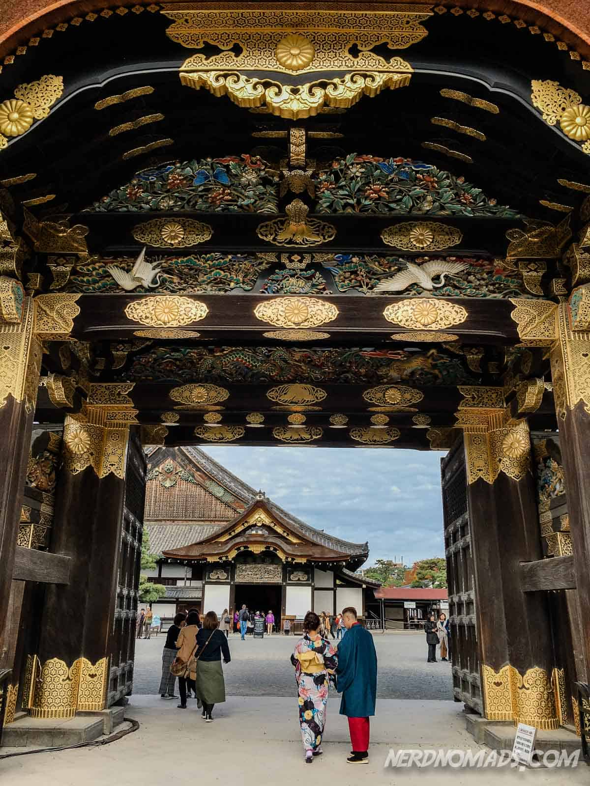
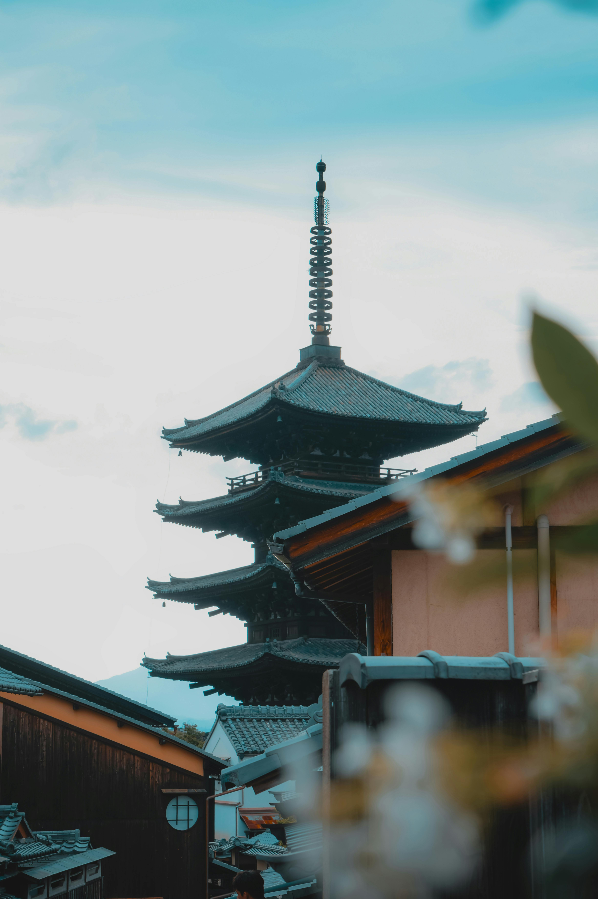
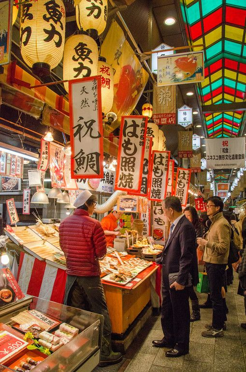
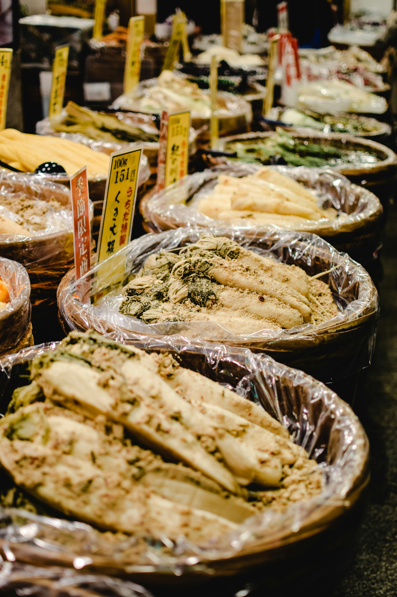
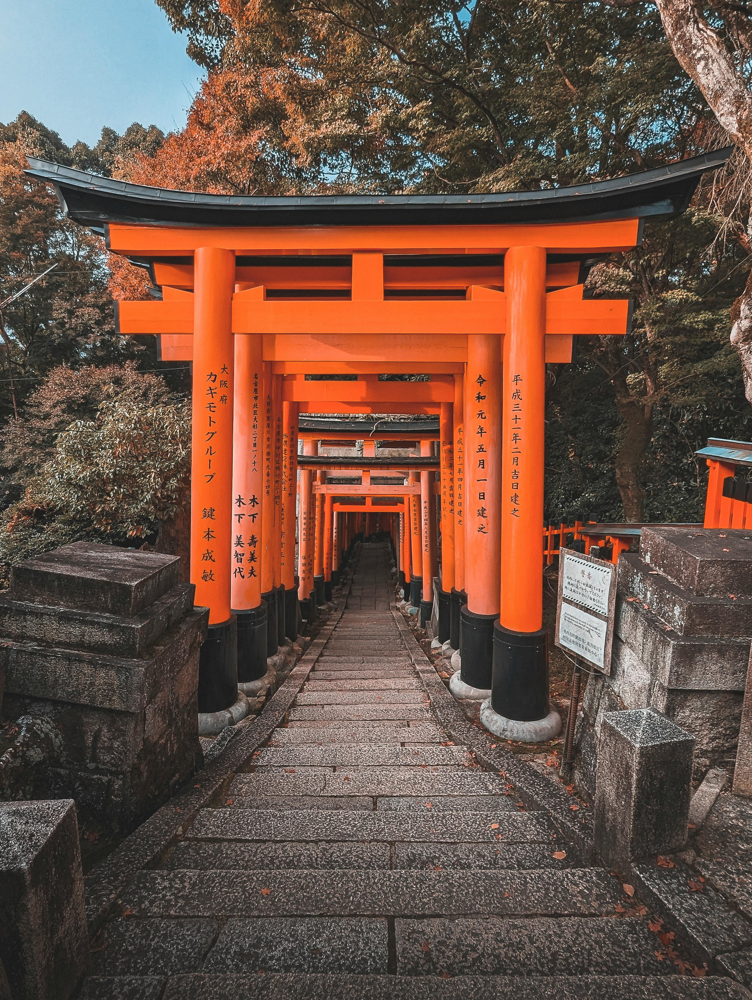
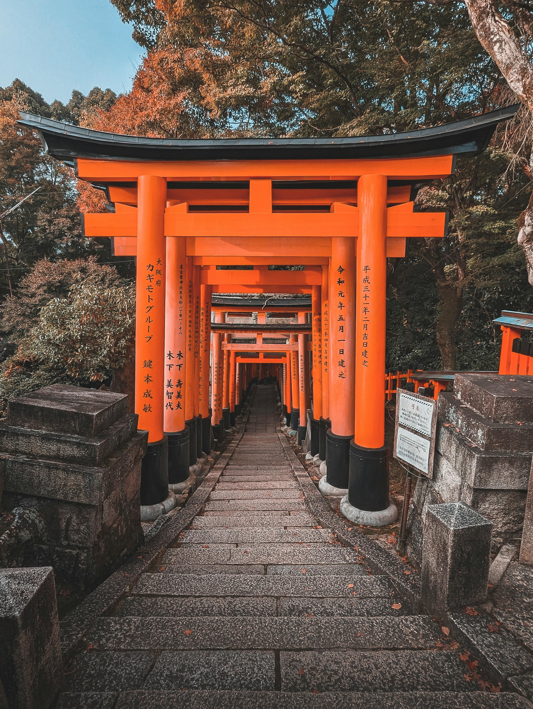

Fushimi Inari Taisha, located in Kyoto, is one of Japan's most iconic and visually stunning Shinto shrines. Established in 711 AD, it is dedicated to Inari, the deity of rice and agriculture. The shrine is renowned for its thousands of vibrant red torii gates, which form picturesque paths winding through the wooded forest of Mount Inari. Visitors can hike these trails, experiencing a serene and mystical atmosphere while passing by numerous smaller shrines and stone fox statues. Fushimi Inari Taisha's unique beauty and spiritual significance make it a must-visit destination for those exploring Japan's cultural and historical heritage.
Nijō Castle


Nijō Castle, located in Kyoto, is a stunning example of Japanese feudal architecture and a UNESCO World Heritage site. Built in 1603 for Tokugawa Ieyasu, the first shogun of the Edo period, the castle complex includes two main areas: Ninomaru Palace and Honmaru Palace. Ninomaru Palace is renowned for its intricate wood carvings, sliding doors with exquisite paintings, and the "nightingale floors" that chirp when walked upon to warn of intruders. Surrounding the palaces are beautiful gardens featuring meticulously landscaped trees, ponds, and stone arrangements, reflecting the aesthetic sensibilities of the Edo period. Nijō Castle stands as a testament to Japan's rich history and artistry.
Nishiki Market


Nishiki Market, often referred to as "Kyoto's Kitchen," is a vibrant and bustling marketplace located in the heart of Kyoto. Spanning five blocks, this historic market dates back several centuries and offers a diverse array of local delicacies, fresh produce, and traditional crafts. Visitors can explore stalls filled with everything from fresh seafood, pickled vegetables, and Japanese sweets to kitchenware and souvenirs. The market is not only a haven for food lovers but also provides a glimpse into Kyoto's culinary traditions and local culture. Nishiki Market's lively atmosphere and unique offerings make it a must-visit destination for anyone looking to experience the flavors and craftsmanship of Kyoto.
 
